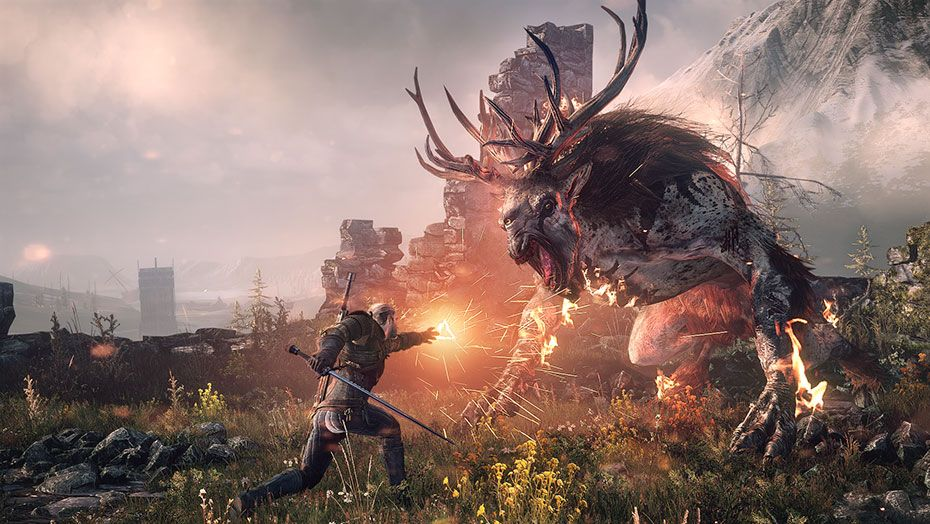

The Witcher 3 won Video Game of the Year, as well as awards for Excellence in Technical Achievement and Excellence in Narrative. Bloodborne, Undertale, and Rise of the Tomb Raider also received multiple wins, taking home two each. The full list of SXSW Awards winners are available below. "CD Projekt Red created something tremendously special with The Witcher 3: Wild Hunt and that's why it's our Video Game of the Year," SXSW Gaming Producer Justin Burnham said in a statement. "The characters are rich, the gameplay is fantastic and the intricate story makes it a pleasure to get lost in the world. It's a prime example of a game that pushes the limits of what digital entertainment can accomplish."
Prior to today, Naughty Dog's The Last of Us was the most awarded game of all time, standing with 249 CONFIRMED GAME OF THE YEAR AWARDS. Its record didn't last for long, though. Following the selection of GDC's game of the year award this week, The Witcher 3: Wild Hunt has secured its spot as the most awarded game in history with a total of 251 awards. On the way it has not only toppled The Last of Us, but legendary games such as The Elder Scrolls V: Skyrim, Red Dead Redemption, Uncharted 2: Among Thieves, Half-Life 2, and Resident Evil 4. The awards for 2015 have been unanimous. While Fallout 4 would hold 56 awards, Bloodborne 31, and Metal Gear Solid V: The Phantom Pain 29, more than 75% of critics agreed that The Witcher 3 was the highlight of the year. Unsurprisingly, it holds a 93 Metascore. The Witcher 3 won our runner-up for GAME OF THE YEAR 2015 and a multitude of nominations. CD Projekt Red also won our BEST DEVELOPER OF 2015. To be fair to past years, there are currently more outlets than ever before making it nearly impossible for older games to have held the record for any substantial length of time. The Witcher 3 has been heralded for its storytelling, visuals, and wealth of content. Some RPG fans even consider it the best open-world RPG of all-time.